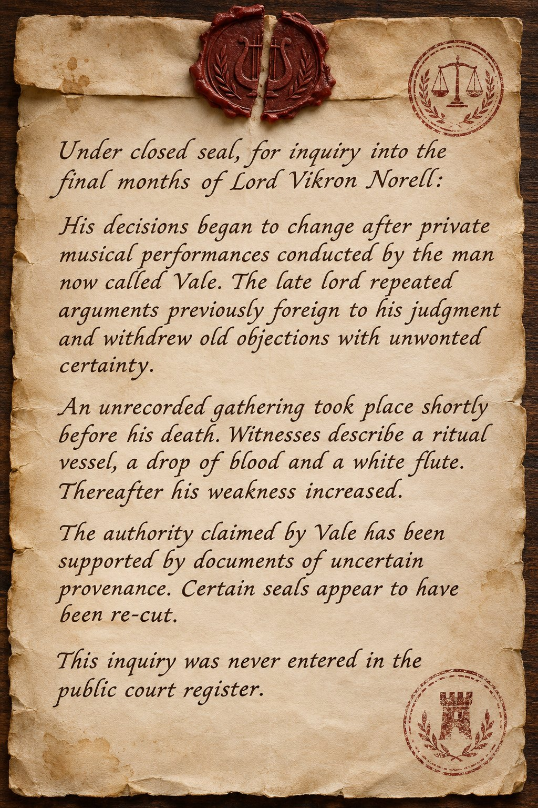

Under closed seal, for inquiry into the final months of Lord Vikron Norell:
His decisions began to change after private musical performances conducted by the man now called Vale. The late lord repeated arguments previously foreign to his judgment and withdrew old objections with unwonted certainty.
An unrecorded gathering took place shortly before his death. Witnesses describe a ritual vessel, a drop of blood and a white flute. Thereafter his weakness increased.
The authority claimed by Vale has been supported by documents of uncertain provenance. Certain seals appear to have been re-cut.
This inquiry was never entered in the public court register.